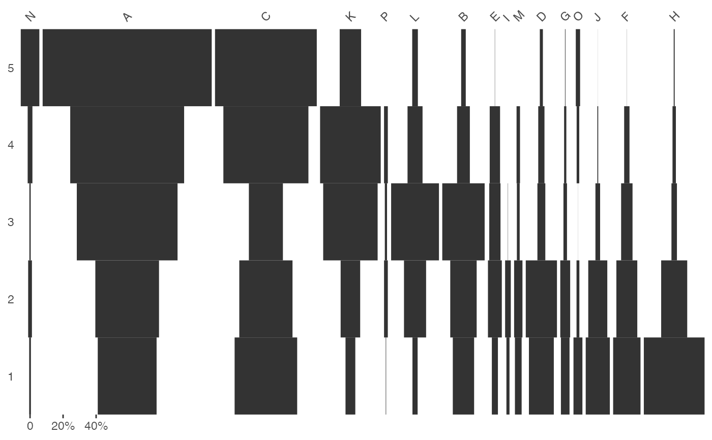

* seriate_* computes a permutation order for rows and/or columns.
* permute rearranges a data matrix according to a permutation order.
* get_order returns the seriation order for rows and columns.
seriate_average(object, ...) seriate_rank(object, ...) permute(object, order, ...) refine_seriation(object, ...) # S4 method for CountMatrix seriate_correspondence(object, margin = c(1, 2), ...) # S4 method for IncidenceMatrix seriate_correspondence(object, margin = c(1, 2), ...) # S4 method for PermutationOrder get_order(x) # S4 method for CountMatrix,PermutationOrder permute(object, order) # S4 method for IncidenceMatrix,PermutationOrder permute(object, order) # S4 method for CA refine_seriation( object, cutoff, n = 1000, axes = c(1, 2), progress = getOption("tabula.progress"), ... ) # S4 method for CountMatrix seriate_average(object, margin = c(1, 2), axes = 1, ...) # S4 method for IncidenceMatrix seriate_average(object, margin = c(1, 2), axes = 1, ...) # S4 method for CountMatrix seriate_rank(object, EPPM = FALSE, margin = c(1, 2), stop = 100) # S4 method for IncidenceMatrix seriate_rank(object, margin = c(1, 2), stop = 100)
| object, x | An \(m \times p\) data matrix (typically an object of class CountMatrix or IncidenceMatrix. |
|---|---|
| ... | Further arguments to be passed to internal methods. |
| order | A PermutationOrder object giving the permutation order for rows and columns. |
| margin | A |
| cutoff | A function that takes a numeric vector as argument and returns a single numeric value (see below). |
| n | A non-negative |
| axes | An |
| progress | A |
| EPPM | A |
| stop | An |
seriate_* returns a PermutationOrder object.
refine_seriation returns a RefineCA object.
permute returns either a permuted CountMatrix or an
IncidenceMatrix (the same as object).
Refining method can lead to much longer execution times and larger output objects.
The matrix seriation problem in archaeology is based on three conditions and two assumptions, which Dunell (1970) summarizes as follows.
The homogeneity conditions state that all the groups included in a seriation must:
Be of comparable duration.
Belong to the same cultural tradition.
Come from the same local area.
The mathematical assumptions state that the distribution of any historical or temporal class:
Is continuous through time.
Exhibits the form of a unimodal curve.
Theses assumptions create a distributional model and ordering is accomplished by arranging the matrix so that the class distributions approximate the required pattern. The resulting order is inferred to be chronological.
The following seriation methods are available:
seriate_averageCorrespondence analysis-based seriation (average ranking). Correspondence analysis (CA) is an effective method for the seriation of archaeological assemblages. The order of the rows and columns is given by the coordinates along one dimension of the CA space, assumed to account for temporal variation. The direction of temporal change within the correspondence analysis space is arbitrary: additional information is needed to determine the actual order in time.
seriate_rankReciprocal ranking seriation. These procedures iteratively rearrange rows and/or columns according to their weighted rank in the data matrix until convergence. Note that this procedure could enter into an infinite loop. If no convergence is reached before the maximum number of iterations, it stops with a warning.
refine_seriation allows to identify samples that are subject to
sampling error or samples that have underlying structural relationships
and might be influencing the ordering along the CA space.
This relies on a partial bootstrap approach to CA-based seriation where each
sample is replicated n times. The maximum dimension length of
the convex hull around the sample point cloud allows to remove samples for
a given cutoff value.
According to Peebles and Schachner (2012), "[this] point removal procedure [results in] a reduced dataset where the position of individuals within the CA are highly stable and which produces an ordering consistent with the assumptions of frequency seriation."
Desachy, B. (2004). Le sériographe EPPM: un outil informatisé de sériation graphique pour tableaux de comptages. Revue archéologique de Picardie, 3(1), 39-56. doi: 10.3406/pica.2004.2396 .
Dunnell, R. C. (1970). Seriation Method and Its Evaluation. American Antiquity, 35(03), 305-319. doi: 10.2307/278341 .
Ihm, P. (2005). A Contribution to the History of Seriation in Archaeology. In C. Weihs & W. Gaul (Eds.), Classification: The Ubiquitous Challenge. Berlin Heidelberg: Springer, p. 307-316. doi: 10.1007/3-540-28084-7_34 .
Peeples, M. A., & Schachner, G. (2012). Refining correspondence analysis-based ceramic seriation of regional data sets. Journal of Archaeological Science, 39(8), 2818-2827. doi: 10.1016/j.jas.2012.04.040 .
refine_seriation, ca
N. Frerebeau
## Replicates Desachy 2004 results ## Coerce dataset to abundance matrix data("compiegne", package = "folio") compiegne_count <- as_count(compiegne) ## Get seriation order for columns on EPPM using the reciprocal averaging method ## Expected column order: N, A, C, K, P, L, B, E, I, M, D, G, O, J, F, H (compiegne_indices <- seriate_rank(compiegne_count, EPPM = TRUE, margin = 2))#> <PermutationOrder: reciprocal ranking> #> Permutation order for matrix seriation: #> - Row order: 1 2 3 4 5... #> - Column order: 14 1 3 11 16 12 2 5 9 13 4 7 15 10 6 8...## Permute columns compiegne_new <- permute(compiegne_count, compiegne_indices) ## Plot new matrix plot_ford(compiegne_new, EPPM = FALSE)